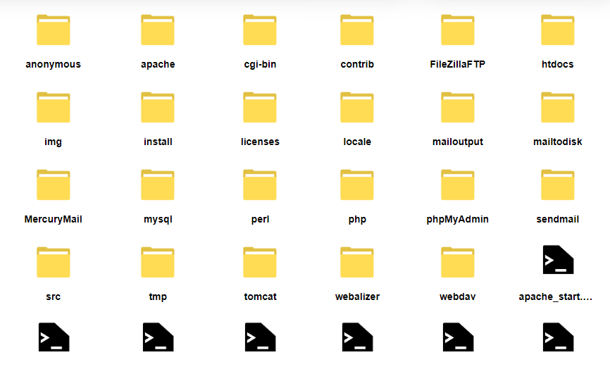

OpenExplorer available under MIT license
Copyright (c) 2023 SecretSheppy
OpenExplorer is an open source and cross-platform file manager built in node.js around the nw.js framework.
It was built for a project I was working on at the time that required more integration with a file manager
than was available through the default system file managers. Since its inception OpenExplorer has evolved into
a capable file manager, providing functionality for copying, moving, creating and deleting files within the system,
viewing file metadata and limited disk management.
One of the more recent features of OpenExplorer is its networking capabilities. If OpenExplorer is installed on two
devices (they do not have to be the same platform) files can be transferred between the devices with a single click.
The navbar is split into 5 tabs.
By default OpenExplorer will show files in a row format (as seen above).
Prompts will appear in the top right hand corner of the file system display. Prompts are used for a variety of features. The above image shows the New File prompt, which allows the user to enter the file name and then press the create button.
Red prompts with white text (as seen above) will appear when an error occurs. These prompts will automatically hide themselves after a set amount of time (by default 3s).
Jump to search (works provided you're not typing into the current directory display)
Closes the currently open prompt
Submits the data in the currently open prompt
Jump to current directory display
Copy currently selected file to clipboard
Paste file from clipboard (if available)
Undo last action (i.e. paste, delete, move etc...)
Create new folder
Open in terminal
Run command
Open new window
Adding custom file icons requires you to add custom records to "res/custom-files.json".
Windows 10 / Windows 11
Full feature set available now.
Linux (tested for Ubuntu and Arch distros)
Linux versions have limited feature set due to development taking place in a Windows environment. Users can expect the latest features about 1-2 months after Windows release.
MacOS
MacOS is supported however is currently untested and available with limited feature set. Users can expect the latest features about 1-2 months after Linux release.
Dark Mode (current most requested feature)
Drag and drop functionality
Dual directory view
Multi-select functionality
Improved terminal support
File preview images
File system indexing
Node.js API for direct integration into node applications
Support for plugins
Improved LAN capabilities
Password protected devices
Automatic scanning for online devices
WAN capabilities
Secure file transfer over a WAN
File type transcoding
Real time drive scanning
OpenExplorer available under MIT license
Copyright (c) 2023 SecretSheppy